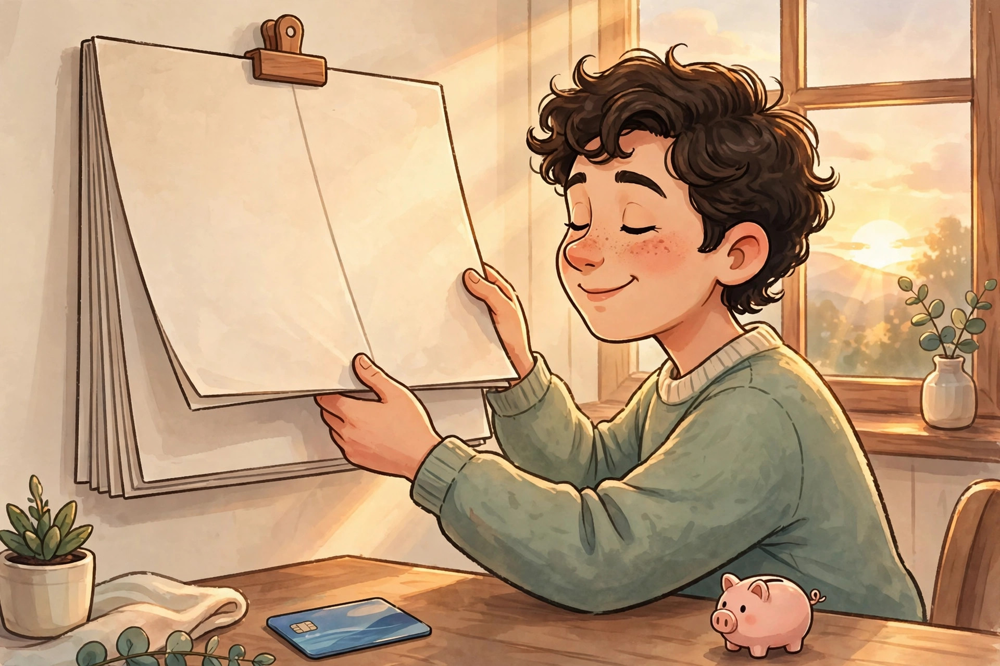

Avoiding January debt

January debt doesn't come from one big bad decision. It comes from twenty small unplanned ones: the extra gifts "just because," the appetizers at the party you're hosting, the "I'll pay it off in January" promise you made to yourself at a checkout counter. This article is about the small, kind habits that stop that drift — without making December feel like a punishment.
First: release the shame
If you've had January debt before, that's not a character flaw. The entire holiday economy — every ad, every sale, every perfectly lit store window — is engineered to make spending feel urgent and easy. You're not weak for feeling the pull; you're normal. This guide works with how people actually are, not how money gurus pretend to be. No lectures, no "just stop buying coffee." Just a plan.
Habit 1: Keep the credit card on a leash
Credit cards aren't evil, but they're dangerously smooth — they separate buying from paying, and that separation is where budgets die. Two rules keep them safe:
- Only charge what the plan already covers. If it's not in the holiday number, the card doesn't pay for it either.
- Never buy something "to pay off later." "Later" is how January balances are born. If the money isn't there now, the purchase waits.
If you know the card tempts you, give yourself a harder barrier: leave it at home and shop with a debit card or cash. Friction is a feature.
Habit 2: Use cash or a separate "holiday" account
Spending hurts less when it's abstract numbers on a screen — that's the documented "pain of paying" effect, and retailers count on it. Flip it: put your holiday number in a separate account or withdraw it as cash, and spend only from that. When the envelope is empty, the spending stops — automatically, without willpower. Watching a physical pile shrink makes every purchase deliberate, which is exactly what you want.
Habit 3: Wait 48 hours on anything unplanned
Impulse buys are the budget's biggest leak. The rule: if it's not on your list, wait 48 hours before buying. Most impulses die within a day — the craving was for the excitement of buying, not the thing itself. If you still want it after two days and it fits someone's amount, buy it with a clear head. If the sale "ends tonight," let it end. Sales recur; your budget doesn't magically refill.
Habit 4: Cap the "just one more" gifts
You know the moment: you've bought the main gift, and then a cute little extra catches your eye. Then another. These add-ons are almost never what people remember — and they're often what blows the budget. Decide now: one main gift per person, plus maybe a small treat. When the list is done, the shopping is done.
Habit 5: Check your number weekly
Once a week in December, spend five minutes comparing what you've spent against your holiday number. If you're on track, enjoy the season guilt-free — you earned that calm. If you're drifting, you catch it early, while there's still time to adjust: move money between categories, swap a planned purchase for a simpler one, or simply stop buying extras. Small corrections in week two beat panic in week four.
Habit 6: Plan the January bills now
January debt isn't just December spending — it's December spending plus January's regular bills landing on top. Before the season, look at your January: rent, utilities, insurance, any annual bills due early in the year. Make sure those are covered before you finalize your holiday number. This one step prevents the classic trap of an affordable December followed by an impossible January.
If you've already overspent
Sometimes you find this advice after the damage is done. Here's the calm, practical response:
- Stop adding to it. Today. The bleeding stops first.
- Add it up. Look at the actual total — scary to face, but smaller problems are easier to solve than vague ones.
- Make a simple payoff plan. List the debts, their balances, and pay extra toward one while making minimum payments on the rest. Pick the smallest balance (quick wins) or the highest interest rate (math wins) — either works; consistency matters more than the method.
- Don't borrow more to fix it. New debt to pay old debt is reshuffling, not solving.
- Be kind to yourself. You made some expensive decisions under pressure. Learn from them, then move on.
If debt is genuinely unmanageable — collectors calling, minimums you can't meet — that's beyond a website's scope. A nonprofit credit counsellor in your area can help you sort options for free. Asking for help is the strongest move, not the weakest.
The real goal
Avoiding January debt isn't about spending nothing. It's about January 1st arriving and feeling... ordinary. Bills paid, nothing owed, no dread. That's what a plan buys you: not a cheaper Christmas, but a calmer new year.
This is general information about personal budgeting, not financial advice. Everyone's situation is different. If debt is overwhelming, consider speaking with a nonprofit credit counsellor.
Keep readingNext: The post-holiday one-hour money review →